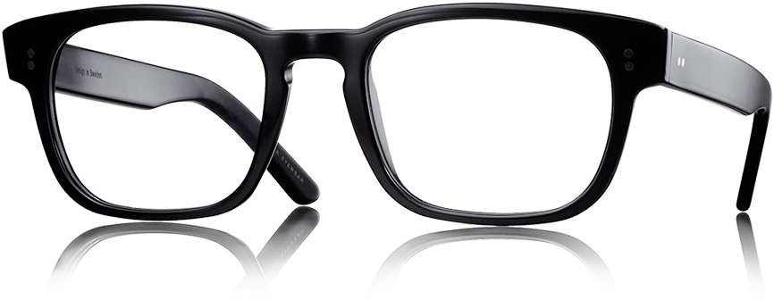

Melhor Qualidade

R$95,00
Book
Our
Special
Offer
Compre seus óculos estilosos
O cuidado consigo mesmo vem sendo um dos assuntos em crescimento na nossa sociedade. Mais conhecido como autocuidado, o termo vem se expandindo por diversas áreas como a moda, a beleza e, claro, que a escolha dos óculos não passaria desapercebida por essas mudanças. Escolher uma armação que combine com o seu estilo também é uma forma de autocuidado, afinal, ela terá o poder de melhorar sua autoestima.